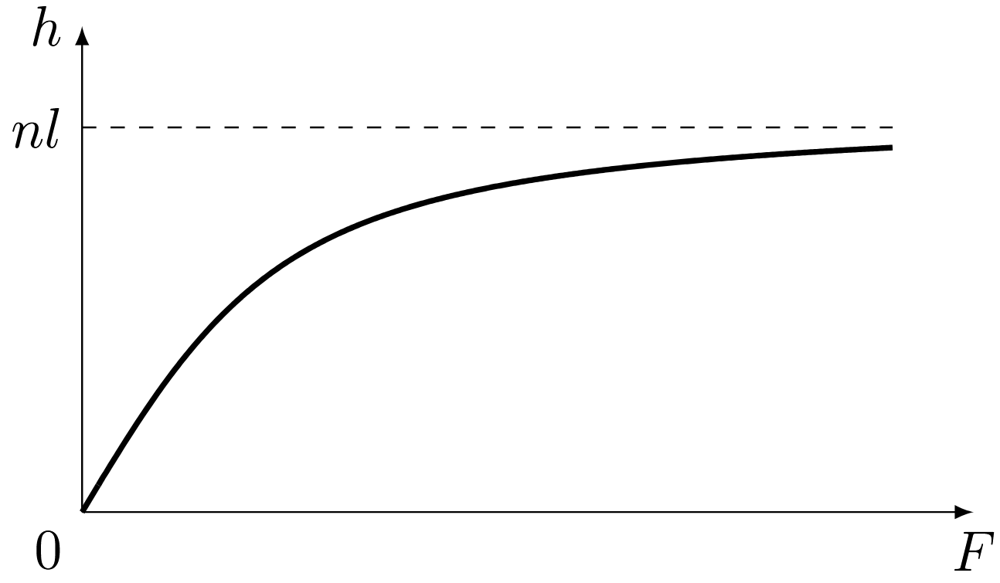
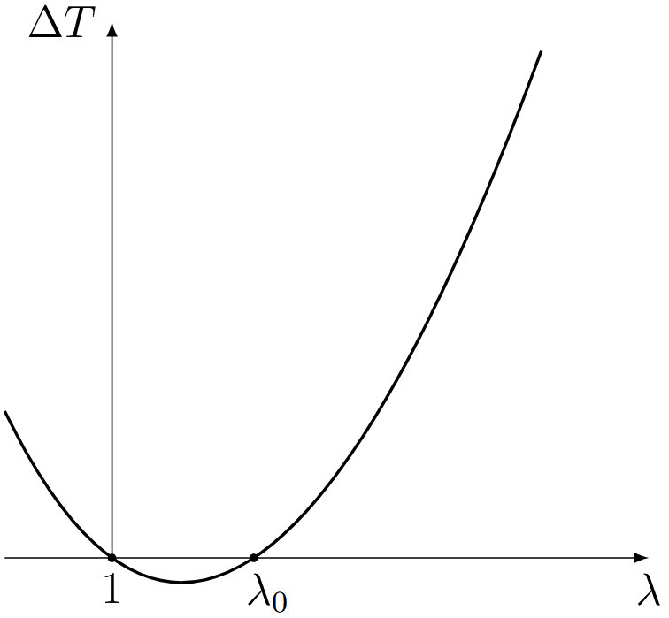

Y26 (2026) — English translation
For a given $m$, the number of links oriented in the positive direction is $n_1 = \dfrac{n+m}{2}$, and in the negative direction $n_2 = \dfrac{n-m}{2}$. Then the required number of ways
The displacement of the end of the molecule is $h_x = (n_1 - n_2) a = ma$. Then, using the formula from the previous paragraph, we get $$ \Gamma = 2^n \sqrt{\frac{2}{\pi n}} \exp\left( - \frac{h_x^2}{2n a^2}\right). $$Then from the definition энтропии we get $$ S = k \ln \Gamma = k \ln\left( 2^n \sqrt{\frac{2}{\pi n}} \right) - \frac{k h_x^2}{2 n a^2}. $$
Note: When one link is rotated, $h_x$ changes to $2a$.
The total number of states in the circuit is $2^n$. Since the directions of the chain links are equally probable, the probability of a given state of the molecule is proportional to the number of microscopic states in which it can be realized. Then the probability that the displacement of the end of the molecule takes on a given value $h_x$ is equal to $$ p(h_x) = \frac{1}{2^n} \Gamma(h_x) = \sqrt{\frac{2}{\pi n}}\exp\left( - \frac{h_x^2}{2n a^2}\right). $$For/At повороте одного звена value $m$ меняется на $2$, therefore смещение $h_x$ меняется на $2 a$. Значит в некотором интервале ширины $dh_x \gg a$ находится $dN = dh_x/2a$ возможных состояний. For/At достаточно малом $dh_x$ вероятности этих состояний практически одинаковы, and therefore вероятность попадания в данный интервал equals $$ dN \cdot p(h_x) = \frac{dh_x}{2 a} \sqrt{\frac{2}{\pi n}}\exp\left( - \frac{h_x^2}{2n a^2}\right). $$Hence density вероятности $$ f(h_x) = \frac{1}{a \sqrt{2 \pi n }}\exp\left( - \frac{h_x^2}{2n a^2}\right). $$Taking into account expression for гауссова интеграла $$ \int\limits_{-\infty}^{+\infty} dx\, e^{- \beta x^2} = \sqrt{\frac{\pi}{\beta}} $$we get $$ \int\limits_{-\infty}^{+\infty} dh_x\, f(h_x) = \frac{1}{a \sqrt{2 \pi n }} \sqrt{2\pi n a^2} = 1, $$that is, the distribution is correctly normalized.
Note: if you were unable to complete this step, you can continue to count $\langle h_x^2\rangle = nl^2$ throughout the entire task.
The displacement vector of the end of the vector relative to the beginning is equal to the sum of the vectors $\vec{l}_i$, $$ \vec{h} = \sum_i \vec{l}_i, $$therefore его квадрат $$ \vec{h}{}^2 = \left( \sum_i \vec{l}_i \right)^2 = \sum_i (\vec{l}_i)^2 +2 \sum_{i < j} \vec{l}_i {\vec{l}_j}. $$Here в первой сумме суммирование производится по всем звеньям молекулы, а во второй – по всем vaporам звеньев. Каждое term первой суммы equals длине одного звена $l^2$, therefore вся первая сумма equals $n l^2$. Усредним вторую сумму по сличным состояниям молекулы. В силу независимости направлений сличных звеньев каждое from произведений for/at усреднении gives 0, $\langle \vec{l}_i \vec{l}_j \rangle = 0$, therefore and вся сумма for/at усреднении обращается в 0. Then for среднего квадрата we get $$ \langle h^2 \rangle = n l^2. $$В силу equalsвероятности всех направлений $$ \langle h_x^2 \rangle = \langle h_y^2 \rangle =\langle h_z^2 \rangle. $$Since $$ \langle h^2 \rangle = \langle h_x^2 \rangle + \langle h_y^2 \rangle+ \langle h_z^2 \rangle, $$средний квадрат одной from проекций equals $$ \langle h_x^2 \rangle = \frac{1}{3} \langle h^2 \rangle = \frac{1}{3} n l^2. $$
Differentiating the value of the Gaussian integral $$ \int\limits_{-\infty}^{+\infty}dx\, e^{-\beta x^2} = \sqrt{\frac{\pi}{\beta}} $$по parameterу $\beta$ we get $$ \int\limits_{-\infty}^{+\infty}dx\, x^2 e^{-\beta x^2} = \frac{1}{2}\sqrt{\frac{\pi}{\beta^3}}, \quad \int\limits_{-\infty}^{+\infty}dx\, x^4 e^{-\beta x^2} =\frac{3}{4} \sqrt{\frac{\pi}{\beta^5}}. $$From the condition нормировки плотности вероятности $$ \int d^3 h f(\vec{h}) = 1 = A \int d^3 h e^{- \beta h^2} = 4 \pi A \int\limits_0^{\infty}h^2 dh\, e^{- \beta h^2} = \pi A \frac{\sqrt{\pi}}{\beta^{3/2}} $$we find coefficient $$ A = \left(\frac{\beta}{\pi}\right)^{3/2}. $$Note that for/at вычислении интеграла появился дополнительный множитель $1/2$, since нижний limit equals $0$, not $- \infty$. Then for среднего квадрата we get $$ \langle h^2 \rangle = \int d^3 h \, h^2 f(\vec{h}) = 4\pi A \int\limits_0^{\infty}h^4 dh\, e^{-\beta h^2} = \pi A \frac{3}{2} \frac{\sqrt{\pi}}{\beta^{5/2}} = \frac{3}{2 \beta}. $$Using expression from предыдущего partа, we find $$ \frac{3}{2 \beta} = nl^2, $$hence $$ \beta = \frac{3}{2 n l^2}. $$ Let us calculate средний magnitude смещения $$ \langle h \rangle = \int d^3 h\, h f(\vec{h}) = 4\pi A \int\limits_0^{\infty} h^3 dh\, e^{-\beta h^2}. $$Перейдем к переменной $\xi = h^2$: $$ \langle h \rangle = 2\pi A \int\limits_0^{\infty}\xi d \xi\, e^{- \beta \xi} = 2 \pi A\left(\left. - \frac{1}{\beta} \xi e^{-\beta \xi}\right|_0^{\infty} + \frac{1}{\beta}\int\limits_0^{\infty} d \xi\, e^{- \beta \xi}\right) = \frac{2\pi A}{\beta^2} = \frac{2}{\sqrt{\pi \beta}}. $$Substituting value $\beta$, we finally find
The same result can be obtained using an analogy with the Maxwell distribution. Indeed, the distribution of the displacement vector of the second vector of the end of the molecule relative to the first differs from the distribution of the velocity vector only in the value of the parameter $\beta$. For the Maxwell distribution, the root mean square value of the velocity $$ \langle v^2 \rangle = \frac{3 k T}{m}, $$а also value среднего модуля скорости $$ \langle v \rangle = \sqrt{\frac{8 k T}{\pi m}}. $$Hence we get безсмерное ratio $$ \frac{\langle v \rangle ^2}{\langle v^2 \rangle} = \frac{8}{3\pi}. $$Оно не содержит parameterов расlimitения, therefore такое же соratio должно выполняться and for $\vec{h}$: $$ \frac{\langle h \rangle ^2}{\langle h^2 \rangle} = \frac{8}{3\pi}, $$ is known, from which we immediately obtain the above answer.
From symmetry, the average displacement vector of the end of the molecule will be directed along the external force, so you only need to find the projection of this vector onto the direction of the force. Let's consider some link, let it form an angle $\theta$ with the direction of the force. Then its potential energy $U = - F l \cos \theta$, which means the probability that it is directed at some solid angle $d \Omega = 2\pi \sin \theta d \theta$ depends only on $\theta$ and has the form $$ B \exp\left(-\frac{U}{kT}\right)d\Omega = B \exp\left(\frac{F l}{kT} \cos \theta \right)d\Omega, $$where coefficient $B$ можно найти from нормировки. For удобства вычислений введем безсмерную переменную $\xi = \dfrac{Fl}{kT}$. Then $$ B \int \limits_0^{\pi} e^{\xi \cos \theta} 2\pi \sin \theta d \theta = 1. $$Перейдем к переменной интегрирования $u = \cos \theta$, которая меняется от $-1$ до $1$, we get $$ 2\pi B \int\limits_{-1}^{1} e^{\xi u} du = \frac{2 \pi B}{\xi} (e^{\xi} - e^{i\xi}) = \frac{4 \pi B}{\xi} \sinh \xi = 1, $$hence $$ B = \frac{1}{4\pi} \frac{\xi}{\sinh \xi}. $$Then средняя проекция звена на направление силы $$ \langle l \cos \theta \rangle = B \int \limits_0^{\pi} l \cos \theta e^{\xi \cos \theta} 2\pi \sin \theta d \theta = 2\pi B l\int\limits_{-1}^1 udu_\, e^{\xi u}. $⟦1 8⟧$ \int\limits_{-1}^1 udu_\, e^{\xi u} = \frac{1}{\xi}\left. ue^{\xi u}\right|_{-1}^1 -\frac{1}{\xi} \int\limits_{-1}^1du\, e^{\xi u} = \frac{1}{\xi} (e^{\xi u} + e^{-\xi u}) - \frac{1}{\xi^2} (e^{\xi u} - e^{- \xi u}). $$$$ \langle l \cos \theta \rangle = \frac{l}{2} \frac{\xi}{\sinh \xi} 2\left(\frac{\cosh \xi}{\xi} - \frac{\sinh \xi}{\xi^2} \right) = l \left( \coth \xi - \frac{1}{\xi}\right). $$Полное смещение конца молекул складывается from проекций отдельных звеньев: $$ h = n \langle l \cos \theta \rangle = n l \left(\coth \frac{Fl}{kT} - \frac{kT}{Fl}\right).$$В limitе малой силы we get сложение $$ \coth \xi - \frac{1}{\xi} = \frac{e^{\xi} + e^{-\xi}}{e^{\xi}-e^{-\xi}} - \frac{1}{\xi} \approx \frac{2 + \xi^2}{2 \xi + \xi^3/3}- \frac{1}{\xi} = \frac{1}{\xi}\left( \frac{1+ \xi^2/2}{1 + \xi^2/6}-1\right) = \frac{1}{\xi} \frac{\xi^2}{3} = \frac{\xi}{3}. $$Then for смещения we get $$ h \approx \frac{nl}{3} \frac{Fl}{kT} = \frac{nl^2}{3 kT}F. $$Note also, что в limitе большой силы, that is $\xi \to \infty$ we get $\coth \xi \to 1$ and $$ h \approx nl \left(1 - \frac{kT}{Fl} \right) \approx nl, $$that is молекула практически полностью выпрямляется. Характерное value силы, for/at котором происходит переход from области малых сил в область больших сил, отвечает $\xi \sim 1$, that is $F \sim kT/l$.

Note: if you were unable to make B1, then use $\langle h_x^2\rangle = nl^2$.
The entropy of one chain in a stretched state is equal to \[ S_1(\vec{h'}) = S_0 - \dfrac{3k}{2nl^2}(\lambda_x^2h_x^2 + \lambda_y^2h_y^2 + \lambda_z^2h_z^2).\]The change in the entropy of one chain as a result of stretching \[\Delta S_1 = S_1(\vec{h'}) - S_1(\vec{h}) = - \dfrac{3k}{2nl^2}((\lambda_x^2-1)h_x^2 + (\lambda_y^2-1)h_y^2 + (\lambda_z^2-1)h_z^2).\]The change in the entropy of the polymer network is expressed through the average value of the change in the entropy of one chain: \[ \Delta S = N\langle\Delta S_1\rangle = - \dfrac{3kN}{2nl^2}((\lambda_x^2-1)\langle h_x^2 \rangle+ (\lambda_y^2-1)\langle h_y^2 \rangle + (\lambda_z^2-1)\langle h_z^2\rangle).\] Using the result of point B, we find
If forces are applied only along the $x$ axis, then $\lambda_x = \lambda$, and for other axes $\lambda_y = \lambda_z$ is true. Since the volume of the rod does not change, then $\lambda_x\lambda_y\lambda_z = 1$. Then $\lambda_y = \lambda_z = 1/\sqrt{\lambda}$. Substituting the dilations into the formula from C2, we find
The first beginning in general form is written as $$ dU = \delta Q + \delta A. $$Here подведенное тепло можно выtimesandть via/through изменение энтропии: $\delta Q = T dS$. Под работой $\delta A$ for/at таком выборе signов подсумевается work, совершенная над обсцом. Она в общем сrayае складывается from работы сил давления and работы внешних сил, растягивающих резину $$ \delta A = Fdl - pdV. $$ Then we finally get ⟦0⟧where $P$ – внешнее pressure, $dV$ – изменение volumeа стержня. Since volume стержня не изменяется, внешнее pressure не совершает работу. Since внутренняя energy зависит только от температуры, то в изотермическом процессе $dU = 0$. Then \[ F = -T\left(\dfrac{\partial S}{\partial l}\right)_T = -\dfrac{T}{l_0}\left(\dfrac{\partial \Delta S}{\partial \lambda}\right)_T =\dfrac{kNT}{l_0}\left(\lambda - \dfrac{1}{\lambda^2}\right).\]
Let us substitute into the expression for force $\lambda = 1 + \varepsilon$ at $\varepsilon \ll 1$: \[F=\dfrac{kNT}{l_0}\left(1+\varepsilon - \dfrac{1}{(1+\varepsilon)^2}\right) \approx \dfrac{3kNT\varepsilon}{l_0}.\] Thus, for small deformations, the force is directly proportional to the relative elongation, i.e. Hooke's law is true. Young's modulus is equal to ($S_0$ – initial cross-sectional area) \[ E = \dfrac{F}{S_0\varepsilon} = \dfrac{3kNT}{l_0 S_0} = \dfrac{3kNT}{V} = 3k\nu T.\]The concentration of polymer chains can be determined by knowing the rubber density and molar mass: $$ \nu = \frac{\rho}{\mu} N_A, $$since $\rho/\mu$ – the number of moles per unit volume. Taking into account the numerical values \[\nu = \dfrac{\Delta N}{\Delta V} = \dfrac{N_A\Delta m /\mu}{\Delta V} = \dfrac{\rho N_A}{\mu} = 7.2\cdot10^{24}~\text{m}^{-3}, ~E \approx 9\cdot 10^4~\text{Pa}.\]
As follows from the expression for entropy, during isothermal tension the entropy of the rod decreases. This means that heat is supplied on an isotherm with a higher temperature, and the Carnot cycle occurs in the forward direction. On an isotherm with a higher temperature, the rod is compressed from $\varepsilon$ to zero deformation with a constant Young's modulus $E=E(T +dT)$ and does positive work \[ A_+ = \int\limits_0^\varepsilon E\varepsilon S_0l_0\,d\varepsilon = \dfrac{E\varepsilon^2V}{2}. \] The change in internal energy on the isotherm is equal to the change in elastic strain energy, since $U_\text{терm}$ depends only on temperature: \[ \Delta U_+ =U_\text{mех}(0,T+dT) - U_\text{mех}(\varepsilon,T+dT) = 0 - U_\text{mех}(\varepsilon,T+dT) = - U_\text{mех}.\]The heat received from the heater is \[ Q_+ = A_+ + \Delta U_+ = \dfrac{E\varepsilon^2V}{2} - U_\text{mех}.\] By condition work on adiabats can be neglected. Then the work of the rod per cycle is equal to \[ dA = \dfrac{E(T+dT)\varepsilon^2V}{2} - \dfrac{E(T)\varepsilon^2V}{2} = \dfrac{ \varepsilon^2 V\,dE}{2}.\]Carnot cycle efficiency \[ \eta = \dfrac{dT}{T} = \dfrac{dA}{Q_+}. \] From here we find
In the “ideal rubber” model $U_\text{mех} =0$. Taking D2 into account, we have $$ E - T\dfrac{dE}{dT} = 0,$$ hence $$ \ln\dfrac{E}{E_0} = \ln\dfrac{T}{T_0}.$$
$$ E - T\dfrac{dE}{dT} = 0,$$
where
$$ \ln\dfrac{E}{E_0} = \ln\dfrac{T}{T_0}.$$
Let's differentiate the equation of state with respect to temperature at a constant length: \begin{multline} \left(\dfrac{\partial F}{\partial T}\right)_l= \dfrac{E_0S_0}{3T_0}\left( \lambda - \dfrac{1+3\alpha (T-T_0)}{\lambda^2}\right) - \dfrac{E_0S_0T}{3T_0}\cdot\dfrac{3\alpha}{\lambda^2} =\\= \dfrac{E_0S_0}{3T_0}\left( \lambda - \dfrac{1+3\alpha (T-T_0)+3\alpha T}{\lambda^2}\right) \approx \dfrac{E_0S_0}{3T_0}\left( \lambda - \dfrac{1+3\alpha T_0}{\lambda^2}\right). \end{multline}The last transition used the condition $\Delta T \ll T_0$. Substituting the resulting expression into the relation for the temperature change, we find \begin{multline} \Delta T = \dfrac{E_0S_0}{3C_l}\int\limits_1^\lambda\left(\lambda - \dfrac{1+3\alpha T_0}{\lambda^2}\right) l_0\,d\lambda =\\= \dfrac{E_0S_0l_0}{3C_l}\left(\dfrac{\lambda^2 -1}{2} +(1+3\alpha T_0)\left(\dfrac{1}{\lambda} -1\right)\right)= \dfrac{E_0S_0l_0}{3C_l}(\lambda - 1)\left(\dfrac{\lambda +1}{2} - \dfrac{1+3\alpha T_0}{\lambda}\right). \end{multline}
Using the resulting formula, we will construct a qualitative graph $\Delta T(\lambda)$.

At $\lambda = \lambda_0$ the expression in right parentheses becomes zero: \[ \dfrac{\lambda +1}{2} - \dfrac{1+3\alpha T_0}{\lambda} = 0\Rightarrow \lambda^2 +\lambda -2(1+3\alpha T_0) = 0. \] The positive root of this equation is \[ \lambda_0 = \dfrac{-1+\sqrt{1+8(1+3\alpha T_0)}}{2}\approx 1 + 2\alpha T_0 = 1.132.\]
Using the formula from E1, we find the temperature changes: